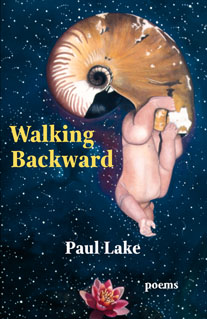

Walking
Backward
Poems by Paul Lake
Story Line Press
$12.95. 80 pages
ISBN 1-885266-72-3
The intense lyrics and
harrowing narratives of Walking Backward explore the web of values and
obligations that bind people into neighborhoods and nations. In the title poem,
a conscience-stricken, middle-aged draft-dodger reflects on the Vietnam era. At
the book’s center is “Seeing the Elephant,” a long narrative by a survivor
of the Donner party tragedy. Fusing fact, dream, and fantasy, the poem gives a
hallucinatory shimmer to the recollections of Elizabeth Reed Murphy, the
story’s protagonist. As the poem traces the tangled story of her life from
innocent girlhood to wise old age, its shifting movements explore how memory
fashions meaning from experience.
“The moral
texture of life is [Lake’s] ground theme, and, fitting common speech to meters
with the apparent ease of a Robert Frost, he reflects on it so engagingly that
he is probably writing permanent American literature.” —Ray Olson, Booklist
“Paul Lake’s
lucid, disquieting narratives are admirable in their playing of the talking
voice against one measure or another.…There are also some outstanding shorter
poems here—‘Pieces,’ for example, or the unassuming and flawless one
called ‘A Grain of Salt.’ Part of the considerable distinction of Walking Backward is its unifying Conradian search for the dimensions
of human nature, and for the border at which inhumanity and disgrace may be said
to begin.” —Richard Wilbur
“In limpid
language, Paul Lake’s poems, from dramatic monologues to philosophical
meditations, consider a wide range of human experience with wisdom, urbanity,
and compassion. I’m struck by both this range and by Lake’s deceptive
transparency: the poems are always clear on first reading yet also always yield
more on successive readings—two rare accomplishments indeed.” —Rachel
Hadas
“Paul Lake’s
new book Walking Backward is a clear
advance on his excellent first collection Another
Kind of Travel. Although the title might suggest otherwise, he looks
squarely at good and evil in these poems. In formal lyrics and dramatic
monologues as fine as any being written today, Lake captures the tragedy and
farce of human motive and action.” —Mark Jarman
Paul Lake's first poetry collection, Another Kind of Travel, received the Porter Fund Award for Literary Excellence. His essays on poetry have appeared widely in journals and anthologies. His novel Among the Immortals (Story Line), a satirical thriller about poets and vampires, was picked as one of the best first novels by The Year's Best Fantasy and Horror. Lake is currently a professor of English and Creative Writing at Arkansas Tech University and lives in Russellville with his wife, artist Tina Lake, and their two children.